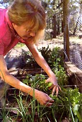

Did you know how to grow new green onions from your leftover cuttings after harvest? Each onion can reproduce edible food multiple times. You can have your onion and eat it too.
It's simple and won't cost you a dime.
When you harvest the onion, cut off the bottom - a quarter of an inch above the root is fine. Eat the top of the onion like you normally would and plant the root in your garden. Cover with two inches of soil. Water twice a week. Before long, you will see a new cluster of onions coming up from this single root. One onion, multiple harvests of green onions.
If you have a long growing season in your area, you can separate the cluster into individual onions and plant them separately for even more of a harvest.
Robert Eubanks
Tacoma, Washington
|
 Harvest green onions all summer long. |
|
|